文字
背景
行間


校長花ごよみ
修学旅行２日目その１
今日の起床は６：００、奈良の朝は、少し寒いですが、生徒は元気です。７：００から朝食をとって今日の班別行動に向けて移動します。天気は曇りで雨は大丈夫そうです。元気に行ってきます。


 朝の竹林院群芳園の様子です。
朝の竹林院群芳園の様子です。


 朝食風景です。
朝食風景です。

 班別の出発地ごとにまずはバスで移動です。大きな荷物は別便で御殿荘へ。私は平等院鳳凰堂のチェックポイントへ。
班別の出発地ごとにまずはバスで移動です。大きな荷物は別便で御殿荘へ。私は平等院鳳凰堂のチェックポイントへ。


 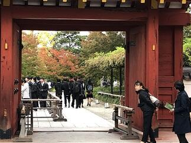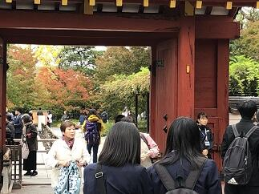平等院鳳凰堂は平成の改修を受けてとても敷地全体が整備され、屋根の鳳凰など金色に輝いてとても美しい外観を拝むことができました。また、敷地内の紅葉も変わり目の移ろう美しさを漂わせていました。生徒は元気に次の目的地に向けてチェックポイントを通過していきました。
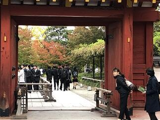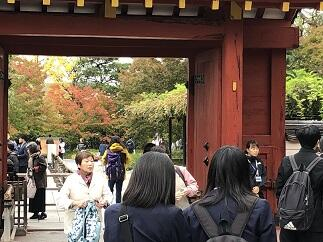平等院鳳凰堂は平成の改修を受けてとても敷地全体が整備され、屋根の鳳凰など金色に輝いてとても美しい外観を拝むことができました。また、敷地内の紅葉も変わり目の移ろう美しさを漂わせていました。生徒は元気に次の目的地に向けてチェックポイントを通過していきました。
朝の竹林院群芳園の様子です。朝食風景です。班別の出発地ごとにまずはバスで移動です。大きな荷物は別便で御殿荘へ。私は平等院鳳凰堂のチェックポイントへ。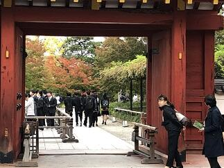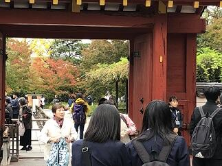平等院鳳凰堂は平成の改修を受けてとても敷地全体が整備され、屋根の鳳凰など金色に輝いてとても美しい外観を拝むことができました。また、敷地内の紅葉も変わり目の移ろう美しさを漂わせていました。生徒は元気に次の目的地に向けてチェックポイントを通過していきました。 修学旅行１日目
今日から３泊４日の修学旅行が始まりました。天候も心配されましたが、特に支障なく無事に旅行することができました。おかげさまで、第１日目は順調な滑りだしとなりました。引き続き明日からも元気に楽しく有意義な旅行になるように頑張ってまいります。


集合は新幹線ホームです。発車３０分前には集合完了。新幹線で中継駅の名古屋へ


 名古屋からは近鉄特急（専用車）でクラスごとの目的地である三重県や奈良県に向けていくつものトンネルを抜けつつ、車内ではおいしいお弁当を食べながら向かいました。
名古屋からは近鉄特急（専用車）でクラスごとの目的地である三重県や奈良県に向けていくつものトンネルを抜けつつ、車内ではおいしいお弁当を食べながら向かいました。


 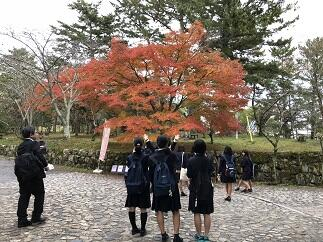
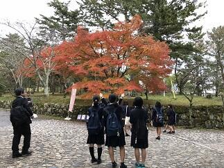 列車を降りてからはクラス別にバスで移動です。私は、B、D、E、H組と共に伊賀上野コースへ。一部ですが紅葉がとてもきれいでした。
列車を降りてからはクラス別にバスで移動です。私は、B、D、E、H組と共に伊賀上野コースへ。一部ですが紅葉がとてもきれいでした。
 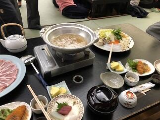
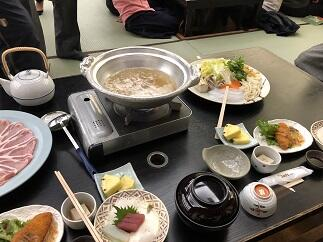 本日の宿舎は、竹林院群芳園です。夕飯はみんなで大広間に集まって鍋を中心においしく楽しくいただき心も体も温まりました。
本日の宿舎は、竹林院群芳園です。夕飯はみんなで大広間に集まって鍋を中心においしく楽しくいただき心も体も温まりました。
集合は新幹線ホームです。発車３０分前には集合完了。新幹線で中継駅の名古屋へ
名古屋からは近鉄特急（専用車）でクラスごとの目的地である三重県や奈良県に向けていくつものトンネルを抜けつつ、車内ではおいしいお弁当を食べながら向かいました。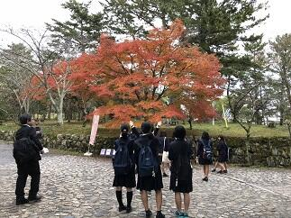列車を降りてからはクラス別にバスで移動です。私は、B、D、E、H組と共に伊賀上野コースへ。一部ですが紅葉がとてもきれいでした。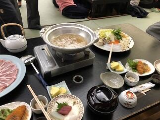本日の宿舎は、竹林院群芳園です。夕飯はみんなで大広間に集まって鍋を中心においしく楽しくいただき心も体も温まりました。 食文化
 今日は、また２EFGの家庭基礎研究を受講している生徒さんたちが、あん入りの生八ッ橋を作って来てくれました。出来栄えは、本家や元祖に勝るとも劣らないすばらしいものでした。あらためて和菓子のすばらしさを感じることができて、人生が豊かになりました。本当にありがとうございました。そして、このように、魅力的な和菓子を自分で作ることができる生徒さんたちは、作る人の大変さや喜びを知っているので生八ッ橋を食するたびに、私のように自分では作れないものにはわからない、ずっと多くの感想や感動を得ているのだろうなぁと感じました。
今日は、また２EFGの家庭基礎研究を受講している生徒さんたちが、あん入りの生八ッ橋を作って来てくれました。出来栄えは、本家や元祖に勝るとも劣らないすばらしいものでした。あらためて和菓子のすばらしさを感じることができて、人生が豊かになりました。本当にありがとうございました。そして、このように、魅力的な和菓子を自分で作ることができる生徒さんたちは、作る人の大変さや喜びを知っているので生八ッ橋を食するたびに、私のように自分では作れないものにはわからない、ずっと多くの感想や感動を得ているのだろうなぁと感じました。 立冬（紅葉だより１）


 今日は、二十四節気の立冬です。暦の上では、季節は冬に入りました。学校の庭の木々も朝晩の冷え込みで、だいぶ色づいてまいりました。朝晩の冷え込みで体調をくずしたり、空気の乾燥など風邪のウイルスなどが活発に活動しやすい時期です。来週には修学旅行もあり、今学校では、そろそろ流行りだしそうなインフルエンザなどへの対応で手洗いの励行や手のアルコール消毒などの対策を行っています。
今日は、二十四節気の立冬です。暦の上では、季節は冬に入りました。学校の庭の木々も朝晩の冷え込みで、だいぶ色づいてまいりました。朝晩の冷え込みで体調をくずしたり、空気の乾燥など風邪のウイルスなどが活発に活動しやすい時期です。来週には修学旅行もあり、今学校では、そろそろ流行りだしそうなインフルエンザなどへの対応で手洗いの励行や手のアルコール消毒などの対策を行っています。 紅葉情報N0.1

 このところ急に寒さが増してきて、特に朝夕の寒さは,なかなか、厳しいものがあります。
このところ急に寒さが増してきて、特に朝夕の寒さは,なかなか、厳しいものがあります。現在、日の出が５時55分、日の入りが16時51分となっていて、昼間の時間は、およそ11時間と短くなってきてますので、日差しをありがたく感じる今日この頃です。寒暖差が激しいほど紅葉が美しくなるそうですが今年はどうでしょうか。本校の庭の木々もほんとに一部ですが、色づいてきています。あまり寒いのは困りますが、一方で、すばらしい紅葉が見られたらと期待しているところです。学校にお立ち寄りの際は是非木々の様子も気に留めて見てただけるとありがたいです。（写真は10月26日現在）
平成30年度全国高等学校ラグビーフットボール大会千葉県予選会
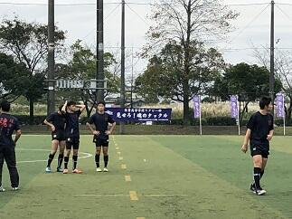 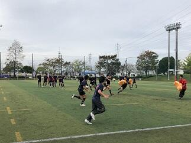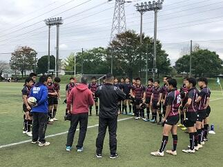
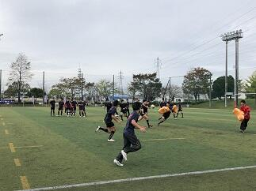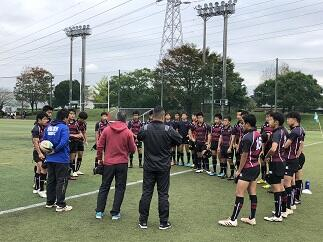
 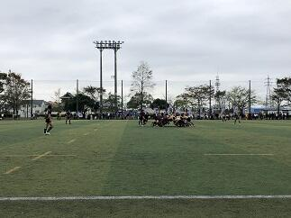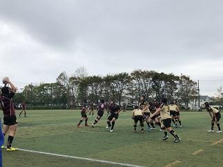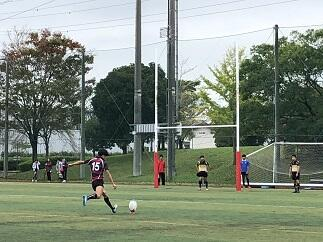今日10月14日（日）に平成30年度全国高等学校ラグビーフットボール大会千葉県予選会決勝トーナメントが始まりました。本校の第１回戦の相手は、県立小金高等学校と市立松戸高等学校の合同チームでした。試合は八幡公園球技場グラウンド（市原市）で行われました。昨日から雨が降っていましたが、朝からは小雨になり、試合中はほぼ止んでいました。ラグビー部OBの方々やその保護者の方々、ラグビー部、野球部、ラグビーファンの保護者の方々、野村教頭先生など多くの応援の方々が見守るなか、次の第2回戦日本体育大学付属柏高等等学校とのベスト８決めの試合に進むことができました。次の試合は10月21日（日）に秀明大学のグラウンドで13：10開始で予定されています。本日の応援ありがとうございました。今後とも応援よろしくお願いします。
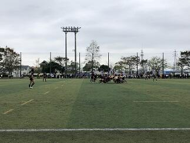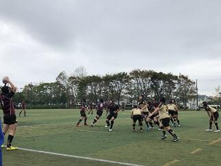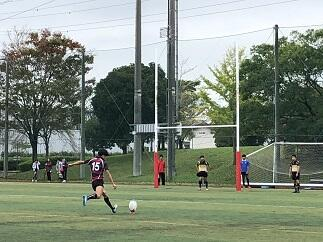今日10月14日（日）に平成30年度全国高等学校ラグビーフットボール大会千葉県予選会決勝トーナメントが始まりました。本校の第１回戦の相手は、県立小金高等学校と市立松戸高等学校の合同チームでした。試合は八幡公園球技場グラウンド（市原市）で行われました。昨日から雨が降っていましたが、朝からは小雨になり、試合中はほぼ止んでいました。ラグビー部OBの方々やその保護者の方々、ラグビー部、野球部、ラグビーファンの保護者の方々、野村教頭先生など多くの応援の方々が見守るなか、次の第2回戦日本体育大学付属柏高等等学校とのベスト８決めの試合に進むことができました。次の試合は10月21日（日）に秀明大学のグラウンドで13：10開始で予定されています。本日の応援ありがとうございました。今後とも応援よろしくお願いします。
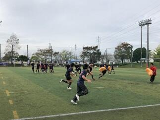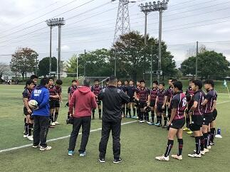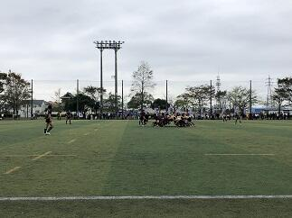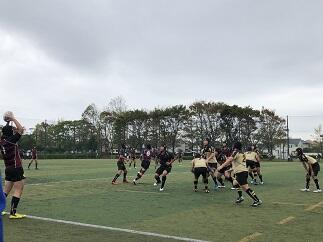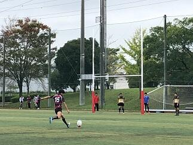今日10月14日（日）に平成30年度全国高等学校ラグビーフットボール大会千葉県予選会決勝トーナメントが始まりました。本校の第１回戦の相手は、県立小金高等学校と市立松戸高等学校の合同チームでした。試合は八幡公園球技場グラウンド（市原市）で行われました。昨日から雨が降っていましたが、朝からは小雨になり、試合中はほぼ止んでいました。ラグビー部OBの方々やその保護者の方々、ラグビー部、野球部、ラグビーファンの保護者の方々、野村教頭先生など多くの応援の方々が見守るなか、次の第2回戦日本体育大学付属柏高等等学校とのベスト８決めの試合に進むことができました。次の試合は10月21日（日）に秀明大学のグラウンドで13：10開始で予定されています。本日の応援ありがとうございました。今後とも応援よろしくお願いします。 台風24号の爪痕


 台風24号が、日本列島を縦断しその脅威を全国の至る所にふるっていきました。本校の朝の状況をお伝えします。本校は古木が多く今回のような暴風が来ると多くの樹木が枝を折られてしまいます。今回は、枝だけでなく技能員さん作業場そばの楓が一本根元から折れてしまいました。(写真上段 左と中)今までも生徒や先生方を見守ってくれて、これから秋に向かって綺麗な紅葉を見せてくれたはずなのにと、とても残念で心が痛みます。中庭の本校舎側にあるベンチが風で記念館側に飛んでいたり、東郷池の水面は折れた枝や落ち葉でいっぱいだったり、学思館前の舗道も記念館前の庭園も大きな枝がそこかしこに落ちているなどこれ以上は散らからないといった状態でした。台風25号が今回に近いコースをたどりそうだということですので、これ以上被害がひろがらないことを祈ります。
台風24号が、日本列島を縦断しその脅威を全国の至る所にふるっていきました。本校の朝の状況をお伝えします。本校は古木が多く今回のような暴風が来ると多くの樹木が枝を折られてしまいます。今回は、枝だけでなく技能員さん作業場そばの楓が一本根元から折れてしまいました。(写真上段 左と中)今までも生徒や先生方を見守ってくれて、これから秋に向かって綺麗な紅葉を見せてくれたはずなのにと、とても残念で心が痛みます。中庭の本校舎側にあるベンチが風で記念館側に飛んでいたり、東郷池の水面は折れた枝や落ち葉でいっぱいだったり、学思館前の舗道も記念館前の庭園も大きな枝がそこかしこに落ちているなどこれ以上は散らからないといった状態でした。台風25号が今回に近いコースをたどりそうだということですので、これ以上被害がひろがらないことを祈ります。 第71回秋季千葉県高等学校野球大会応援よろしくお願いします。
 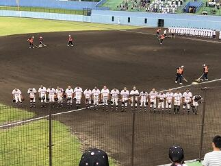
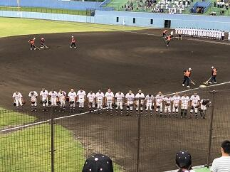
 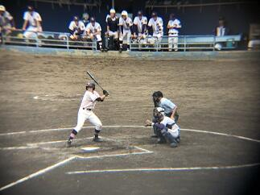
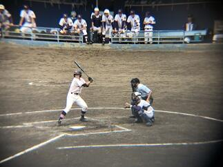 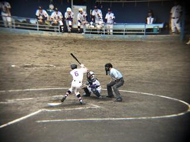
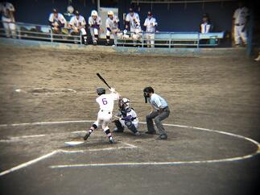 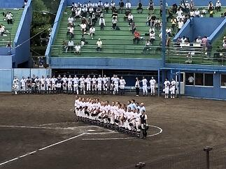
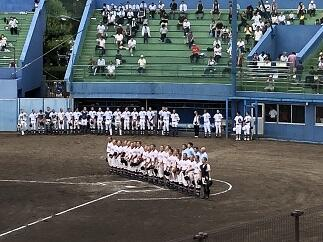 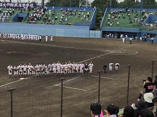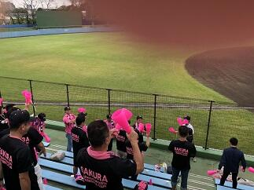 今日は、平成３０年度第71回秋季千葉県高等学校野球大会の第2回戦が各地で行われました。本校の第１回戦は９月２２日にナスパ･スタジアムで行われた松戸国際戦でした。延長14回の激戦を７－６で制して本日、本校の第2回戦は強豪千葉経済大学付属高等学校（以下 千葉経済）との試合となりました。本日も多くの保護者・ご家族の皆様とOBの方々が応援するなか、佐倉高校の先攻で始まった試合ですが、1回裏に千葉経済に1点先攻されましたが、2回表にすぐ2点取って1点差で5回表までリードをしていました。しかし、5回裏に千葉経済に2点取られて逆に1点リードのまま６回が終わりました。７回の表に、この試合を決定する運命の２点を取り返して１点リードし、６回からリリーフで出場した吉岡選手が、６回から９回まで０点で抑えて４－３で千葉経済に勝利しました。これでベスト１６入りです。今日先発の東海林選手、リリーフの吉岡選手を堅守でバックアップした守備力と大切な場面でつないで得点する攻撃力がかみ合った良い試合だったと思います。応援に来ていただいた保護者・ご家族やOBの皆様、本当にありがとうございました。次のベスト８決めとなる第３回戦は、２９日（土）に柏の葉公園野球場の第１試合で行われる習志野戦です。是非とも皆さんで応援に来ていただけると幸いです。
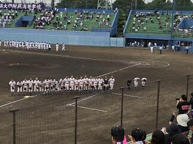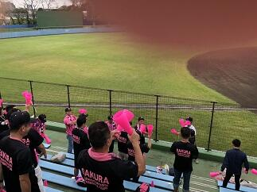 今日は、平成３０年度第71回秋季千葉県高等学校野球大会の第2回戦が各地で行われました。本校の第１回戦は９月２２日にナスパ･スタジアムで行われた松戸国際戦でした。延長14回の激戦を７－６で制して本日、本校の第2回戦は強豪千葉経済大学付属高等学校（以下 千葉経済）との試合となりました。本日も多くの保護者・ご家族の皆様とOBの方々が応援するなか、佐倉高校の先攻で始まった試合ですが、1回裏に千葉経済に1点先攻されましたが、2回表にすぐ2点取って1点差で5回表までリードをしていました。しかし、5回裏に千葉経済に2点取られて逆に1点リードのまま６回が終わりました。７回の表に、この試合を決定する運命の２点を取り返して１点リードし、６回からリリーフで出場した吉岡選手が、６回から９回まで０点で抑えて４－３で千葉経済に勝利しました。これでベスト１６入りです。今日先発の東海林選手、リリーフの吉岡選手を堅守でバックアップした守備力と大切な場面でつないで得点する攻撃力がかみ合った良い試合だったと思います。応援に来ていただいた保護者・ご家族やOBの皆様、本当にありがとうございました。次のベスト８決めとなる第３回戦は、２９日（土）に柏の葉公園野球場の第１試合で行われる習志野戦です。是非とも皆さんで応援に来ていただけると幸いです。 夢を育む講演会と通学合宿２


 今日の6、7限目を使って１学年の生徒を対象に「夢を育む講演会」が開催されました。(写真 左上) 講師は、千葉工業大学の未来ロボット技術研究センター（以下 fuRo）の室長の先川原正浩氏をお願いしました。先川原様からは、fuRo の今までの取り組みと今後を中心にロボット工学の未来についてたくさんの動画を交えてお話を伺うことができました。実際5，6年前であれば現実味が薄かったことが次々と実現されてきています。とはいえ、その時点時点で未来について、いろいろな予測がありましたが、振り返ると実現されているもの、されなかったものがあり、そこには、いろいろな要因があるわけです。言えることは科学技術の進歩だけでなく政治、経済や宗教、倫理観、道徳観などの思想や感情など含めて世界の状況を正しく見ながら未来を自分自身でしっかりと考えて判断していくことの大切さを改めて学びました。
今日の6、7限目を使って１学年の生徒を対象に「夢を育む講演会」が開催されました。(写真 左上) 講師は、千葉工業大学の未来ロボット技術研究センター（以下 fuRo）の室長の先川原正浩氏をお願いしました。先川原様からは、fuRo の今までの取り組みと今後を中心にロボット工学の未来についてたくさんの動画を交えてお話を伺うことができました。実際5，6年前であれば現実味が薄かったことが次々と実現されてきています。とはいえ、その時点時点で未来について、いろいろな予測がありましたが、振り返ると実現されているもの、されなかったものがあり、そこには、いろいろな要因があるわけです。言えることは科学技術の進歩だけでなく政治、経済や宗教、倫理観、道徳観などの思想や感情など含めて世界の状況を正しく見ながら未来を自分自身でしっかりと考えて判断していくことの大切さを改めて学びました。話は代わって今日は、本校ESS部の生徒たちが、通学合宿で来ている小学生に対して、英語で説明して化学実験を体験をしてもらうというイベントを開催しました。（写真 右上、下段）内容は「人工イクラを作る実験」「墨流し」でした。参加した小学生はとても楽しく参加していました。本校ESS部の生徒たちにとっても小学生に教えるという大変貴重な体験をさせていただいてとても良かったと思います。明日も行う予定です。
通学合宿
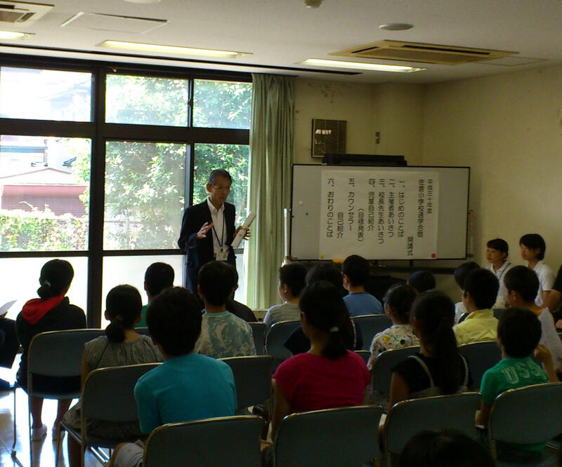本校のセミナーハウス「学思館」を宿泊場所として、小学校の4年生から6年生の子どもたちによる「通学合宿」が本日から3泊4日で実施されます。佐倉市立中央公民館が、今年度は佐倉小学校の対象となる学年の希望児童を集めて実施するもので、子どもたちは親元を離れ、団体生活の中で日常生活の基本を自分自身で行いながら学校に通うというものです。この通学合宿の開講式が本日行われました。合宿に参加した児童の皆さん、合宿期間中に、皆さんのために、本校のESSの生徒がイベントを企画していますので楽しみしていてください。
なお、この「通学合宿」は千葉県教育委員会で推進していて千葉県各地で行われいるます。子どもたちの社会性、自主性、協調性を伸ばし、「生きる力」を育むことが期待される取り組みです。
なお、この「通学合宿」は千葉県教育委員会で推進していて千葉県各地で行われいるます。子どもたちの社会性、自主性、協調性を伸ばし、「生きる力」を育むことが期待される取り組みです。
平成３０年度関東高等学校カヌー選手権選抜大会（その3）
 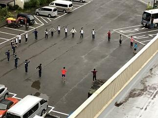
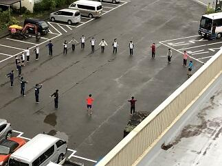


 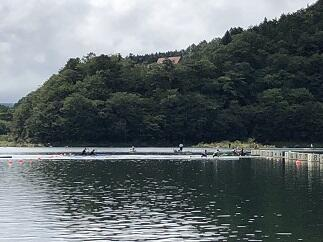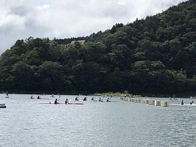
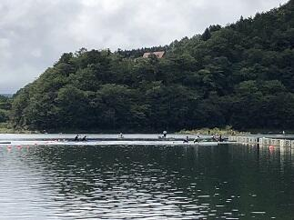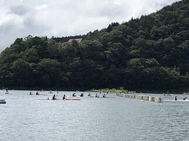
 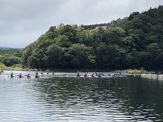
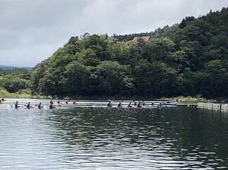
 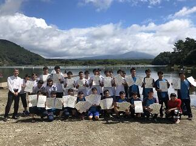
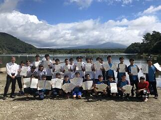 今日は決勝です。朝6;00の段階では雨は止んでいます。このまま天候が持ってくれてれば良いコンディションで競技が行えると思います。生徒たちは、予定していた朝のトレーニングメニュウを元気に行っていました。（朝６：００段階）
今日は決勝です。朝6;00の段階では雨は止んでいます。このまま天候が持ってくれてれば良いコンディションで競技が行えると思います。生徒たちは、予定していた朝のトレーニングメニュウを元気に行っていました。（朝６：００段階）お陰様で午前中、雨だけでなく風も無くて、とても良いコンディションのもとで競技を行うことができました。
決勝に進出した佐倉高校のすべての選手が入賞するとともに、高校別の総合成績でも男女とも総合２位となり、閉会式で表彰されました。これも菅澤先生、西山先生、宮代先生、加藤先生や引退した３年生と今まで頑張ってきた成果が結果として表れたのだと思います。本当におめでとうございます。各都県の素晴らしい選手たちとの競技を終えて解決すべき課題や目標ができて、またひと回り大きくなったのではないかと思います。菅澤先生、西山先生、選手の皆さん本当にお疲れ様でした。また、応援に来ていただいた保護者や家族の皆さんありがとうございました。
平成３０年度関東高等学校カヌー選手権選抜大会（その2）

 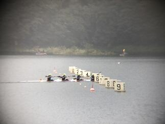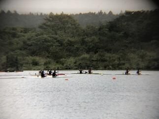
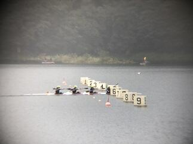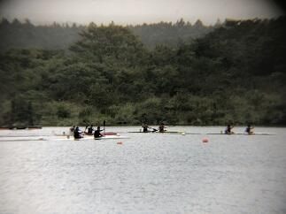
 今日は、大会初日です。精進湖では朝６：００の段階では天候は雨でした。午前中は、強い雨は降りませんでしたがかなり濡れる雨でした。午後からは雨が止む時もあり風が強くなかったことが幸いでした。また、何とか生徒たちの頑張りもあって本日の全日程を無事に終えることができました。これも山梨県カヌー協会の先生方や関東高体連カヌー専門部の各都県の先生方のおかげであるとこころより感謝いたします。また、応援に来てくださった保護者の皆様ありがとうございました。明日はすべての種目の決勝が行われます。佐倉高校も男子カヤックシングル以外のすべての種目で決勝に進出しました。本当に頑張ったと思います。
今日は、大会初日です。精進湖では朝６：００の段階では天候は雨でした。午前中は、強い雨は降りませんでしたがかなり濡れる雨でした。午後からは雨が止む時もあり風が強くなかったことが幸いでした。また、何とか生徒たちの頑張りもあって本日の全日程を無事に終えることができました。これも山梨県カヌー協会の先生方や関東高体連カヌー専門部の各都県の先生方のおかげであるとこころより感謝いたします。また、応援に来てくださった保護者の皆様ありがとうございました。明日はすべての種目の決勝が行われます。佐倉高校も男子カヤックシングル以外のすべての種目で決勝に進出しました。本当に頑張ったと思います。明日も、引き続き今まで頑張ってきた自分と仲間を信じて力を発揮してもらいたいと思います。
平成３０年度関東高等学校カヌー選手権選抜大会（その１）


 平成３０年度関東高等学校カヌー選手権選抜大会が山梨県南都留郡富士河口湖町精進湖カヌー競技場で明日15日、明後日16日と開催されます。本日は、その大会の準備と合わせて関東高体連カヌー専門部秋季委員長会議や監督会議が行われました。また、天候については、あいにくと雨模様に加えて気温が上がらず風が吹くと防寒着がないとつらい一日でした。そんな中、生徒たちは運んできたカヌーの積み下ろし、艇の点検、活動拠点となるテントの設営などきびきびと支度を整え、明日からの競技に備えて念入りにフォームの点検や湖水の状況など確認しつつ練習を行っていました。大変充実した練習が行えたのではないかと思います。晴れていれば雄大な富士山に見守られながらの練習となったのですが、残念ながらお姿を拝むことはできませんでした。（上段右の写真参照）
平成３０年度関東高等学校カヌー選手権選抜大会が山梨県南都留郡富士河口湖町精進湖カヌー競技場で明日15日、明後日16日と開催されます。本日は、その大会の準備と合わせて関東高体連カヌー専門部秋季委員長会議や監督会議が行われました。また、天候については、あいにくと雨模様に加えて気温が上がらず風が吹くと防寒着がないとつらい一日でした。そんな中、生徒たちは運んできたカヌーの積み下ろし、艇の点検、活動拠点となるテントの設営などきびきびと支度を整え、明日からの競技に備えて念入りにフォームの点検や湖水の状況など確認しつつ練習を行っていました。大変充実した練習が行えたのではないかと思います。晴れていれば雄大な富士山に見守られながらの練習となったのですが、残念ながらお姿を拝むことはできませんでした。（上段右の写真参照）明日からの競技会が無事に行われ、参加する選手の皆さんが日ごろの練習の成果を存分に発揮できるよう祈念するとともに、選手の皆さんには競技を楽しんでもらいたいと思います。
皆で出来ることを探して行おう。
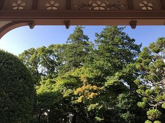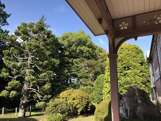ここ数日の朝の通勤時間帯の気温が19℃近辺で、それ以前と比べると一気に10℃くらい下がり肌寒さを感じてます。温度変化が激しいだけでも体調を整えるのは苦労します。ましてや、災害に遭われた地方の方々は更に大変な思いをされているのではないかと危惧されます。北海道胆振東部地震が発生して一週間が経ちました。全国的に地震については、いつ起きてもおかしくないと言われ続けているなかで、多くの場合、いざという時の備えをしているおかげで被害が軽減できている訳ですが、それでも災害がある度に犠牲を伴うような新たな課題が出てきます。ですから、災害後の支援をどうするかがとても重要です。本日、JRC同好会の生徒たちが発案し、北海道胆振東部地震による被災地支援を目的とした義援金の募金活動を明日14日から20日までの平日の昼休みと帰りのHR終了後を使って実施することになりました。今自分が、社会に対して貢献できることを考え実行に移してくれたのだと思います。その実行力に敬意を表します。趣旨にご賛同いただければ支援へのご協力をお願いします。集めた義援金は日本赤十字社を通して全額を被災地に寄付する予定です。(写真は一部色づき始めた木々の様子です。)
防災訓練に思うこと
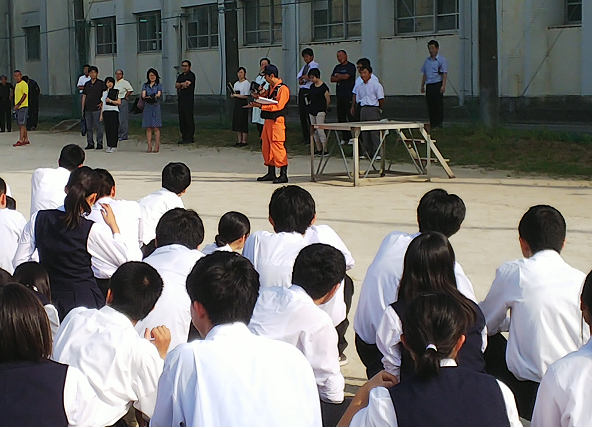 本日、防災訓練がありました。天候が心配されましたが、無事に訓練を行うことができました。普段何気なく歩いている廊下や階段の長さ・幅・傾斜・障害物の有無、授業を受けている教室や校舎の配置や壁や窓の位置、そして自分が活動している場所で普段はいつごろ何をしているかなど、いざ何か起こった時にはどのようなことに気を付け一人ひとりが行動したら学校全体が安全に命を守る活動ができるのか。防災訓練は、平常時には意識せずに生活している場を今一度点検し命を守るための正しい行動がとれるように見直す良い機会です。訓練だからこそ、その意味や意義を理解した主体的な参加が求められます。自助・共助・公助といいますが、最近地震・台風だけでなく局地的に起こる豪雨や強風など自然災害が大変多く発生しています。最初の3秒、30秒、3分・・時間の経過に合わせ周りの環境が急変するなか、自らの命を守る行動とともに、周りの人々と協力して更なる安全確保へ向けて何ができるのか日ごろから想像力を発揮して考え、できる限り多くの人々との協力関係を築いて十分な準備をしておくことが今まで以上に重要となっています。
本日、防災訓練がありました。天候が心配されましたが、無事に訓練を行うことができました。普段何気なく歩いている廊下や階段の長さ・幅・傾斜・障害物の有無、授業を受けている教室や校舎の配置や壁や窓の位置、そして自分が活動している場所で普段はいつごろ何をしているかなど、いざ何か起こった時にはどのようなことに気を付け一人ひとりが行動したら学校全体が安全に命を守る活動ができるのか。防災訓練は、平常時には意識せずに生活している場を今一度点検し命を守るための正しい行動がとれるように見直す良い機会です。訓練だからこそ、その意味や意義を理解した主体的な参加が求められます。自助・共助・公助といいますが、最近地震・台風だけでなく局地的に起こる豪雨や強風など自然災害が大変多く発生しています。最初の3秒、30秒、3分・・時間の経過に合わせ周りの環境が急変するなか、自らの命を守る行動とともに、周りの人々と協力して更なる安全確保へ向けて何ができるのか日ごろから想像力を発揮して考え、できる限り多くの人々との協力関係を築いて十分な準備をしておくことが今まで以上に重要となっています。
人は決してひとりでは生きてない。多くの人々との協力のなかで生きている。防災訓練は家族・先生・友人・知人等自分に関わる多くの方々への感謝を忘れない日にもして欲しいと思います。
本日、防災訓練がありました。天候が心配されましたが、無事に訓練を行うことができました。普段何気なく歩いている廊下や階段の長さ・幅・傾斜・障害物の有無、授業を受けている教室や校舎の配置や壁や窓の位置、そして自分が活動している場所で普段はいつごろ何をしているかなど、いざ何か起こった時にはどのようなことに気を付け一人ひとりが行動したら学校全体が安全に命を守る活動ができるのか。防災訓練は、平常時には意識せずに生活している場を今一度点検し命を守るための正しい行動がとれるように見直す良い機会です。訓練だからこそ、その意味や意義を理解した主体的な参加が求められます。自助・共助・公助といいますが、最近地震・台風だけでなく局地的に起こる豪雨や強風など自然災害が大変多く発生しています。最初の3秒、30秒、3分・・時間の経過に合わせ周りの環境が急変するなか、自らの命を守る行動とともに、周りの人々と協力して更なる安全確保へ向けて何ができるのか日ごろから想像力を発揮して考え、できる限り多くの人々との協力関係を築いて十分な準備をしておくことが今まで以上に重要となっています。人は決してひとりでは生きてない。多くの人々との協力のなかで生きている。防災訓練は家族・先生・友人・知人等自分に関わる多くの方々への感謝を忘れない日にもして欲しいと思います。
閑話 その９ フィボナッチ数列と黄金比
フィボナッチ数列｛1，1，2，3，5，8，13，21，34・・・｝と黄金比 Φ には、いろいろな関係がありそうです。
フィボナッチ数列 { Fn } の定義式は F1＝１、F2＝２、 Fn＝ Fn-1 ＋ Fn-2 （ｎ≧３）（以下、この関係式を漸化式とよぶ。）でした。定義式からフィボナッチ数列の各項はすべて整数であることは明らかですね。このとき、ｎ番目の数をいちいち足していかなくても求められると便利ですよね。つまり第ｎ項を直接求められる式がほしいわけです。数学では、数列の隣接３項間漸化式から一般項を求める問題を解いた人にはお馴染みですが、ちょっと考えてみましょう。
フィボナッチ数列の漸化式 Fn＝ Fn-1 ＋ Fn-2 ・・・①に準じて rn = rn-1 + rn-2 ・・・②を満たす（ゼロでない）r の累乗 rn の数列が存在するか調べてみましょう。②の両辺を rn-2 で割ると、 r２ = r + １ つまり r２ - r - １ = 0
$$r=\frac{1+\sqrt{5 } }{2},\frac{1-\sqrt{5 } }{2}$$ ここで、閑話その６の表記を使って $$\phi=\frac{1+\sqrt{5 } }{2},\phi'=\frac{1-\sqrt{5 } }{2}$$
とすると r = Φ または r = Φ’ のとき、累乗 rn はフィボナッチ数列の漸化式①を満たすということです。このことから、
問１ A と B を定数とするとき、任意の数列 Kn = A Φｎ＋B Φ’ｎ ・・・③も①の漸化式を満たしていることを確かめてください。
問２ ここで K1 と K2 を １として、A と B を求めてください。
以上のことと、$$\sqr{5}=\phi-\phi'$$ を使うと、フィボナッチ数列の一般項 Fn は、
$$F_n=\frac{\phi^n-\phi'^n}{\phi-\phi'}=\frac{1}{\sqr{5 } }\left[\left(\frac{1+\sqr{5 } }{2}\right)^n-\left(\frac{1-\sqr{5 } }{2}\right)^n\right]$$ ・・・④
となります。この④の式からはフィボナッチ数列の各項が、整数になるようには見えませんね。
問３ ④の式で最初の何項か実際に（工夫して）計算してみましょう。（その６の復習）
フィボナッチ数列 { Fn } の定義式は F1＝１、F2＝２、 Fn＝ Fn-1 ＋ Fn-2 （ｎ≧３）（以下、この関係式を漸化式とよぶ。）でした。定義式からフィボナッチ数列の各項はすべて整数であることは明らかですね。このとき、ｎ番目の数をいちいち足していかなくても求められると便利ですよね。つまり第ｎ項を直接求められる式がほしいわけです。数学では、数列の隣接３項間漸化式から一般項を求める問題を解いた人にはお馴染みですが、ちょっと考えてみましょう。
フィボナッチ数列の漸化式 Fn＝ Fn-1 ＋ Fn-2 ・・・①に準じて rn = rn-1 + rn-2 ・・・②を満たす（ゼロでない）r の累乗 rn の数列が存在するか調べてみましょう。②の両辺を rn-2 で割ると、 r２ = r + １ つまり r２ - r - １ = 0
$$r=\frac{1+\sqrt{5 } }{2},\frac{1-\sqrt{5 } }{2}$$ ここで、閑話その６の表記を使って $$\phi=\frac{1+\sqrt{5 } }{2},\phi'=\frac{1-\sqrt{5 } }{2}$$
とすると r = Φ または r = Φ’ のとき、累乗 rn はフィボナッチ数列の漸化式①を満たすということです。このことから、
問１ A と B を定数とするとき、任意の数列 Kn = A Φｎ＋B Φ’ｎ ・・・③も①の漸化式を満たしていることを確かめてください。
問２ ここで K1 と K2 を １として、A と B を求めてください。
以上のことと、$$\sqr{5}=\phi-\phi'$$ を使うと、フィボナッチ数列の一般項 Fn は、
$$F_n=\frac{\phi^n-\phi'^n}{\phi-\phi'}=\frac{1}{\sqr{5 } }\left[\left(\frac{1+\sqr{5 } }{2}\right)^n-\left(\frac{1-\sqr{5 } }{2}\right)^n\right]$$ ・・・④
となります。この④の式からはフィボナッチ数列の各項が、整数になるようには見えませんね。
問３ ④の式で最初の何項か実際に（工夫して）計算してみましょう。（その６の復習）
県立移管120周年記念に向けて
7月28日（土）に台風が接近するなか、午前中に鹿山会役員会が、午後に120周年記念事業実行委員会の会議が行われました。どちらも、大きな議題は120周年記念事業に関しての情報共有と取り組み状況の確認（特に来年11月9日に行われる記念式典や記念誌発行について現在までの準備状況など）を中心に課題の洗い出しとそれらへの対応方法等について話し合われました。120周年記念事業は、学校にとって大きな節目となるとても大切な事業です。これから準備について本格的に動きだすこととなりますので、PTA・鹿山会の皆様には、ご支援、ご協力のほどよろしくお願いいたします。
オーストラリア派遣

 昨日、成田空港にオーストラリアでのSGH海外研修に参加する生徒諸君のお見送りに行ってきました。この研修では２０名の生徒を坂本先生と内山先生が引率をしてくださります。
昨日、成田空港にオーストラリアでのSGH海外研修に参加する生徒諸君のお見送りに行ってきました。この研修では２０名の生徒を坂本先生と内山先生が引率をしてくださります。お見送りにいらしゃったご家族や野村教頭先生が見守るなか、チェックイン前のセレモニーでは、NAA（成田国際空港株式会社）でご勤務されている本校OBの方々からも激励のお言葉をいただきました。
生徒はNambour Christian College での研修を中心にホームスティをしながら現地の方々との交流を深めます。そのなかで、いろいろな見方、考え方や価値観に触れることでオーストラリアでSGHの課題研究も深めてまいります。研修が生徒一人一人にとって有意義なものとなり、ひと回り大きく成長して元気に帰ってくることを期待します。
生徒会役員任命式・壮行会

 今日は、本日から任期開始となる新生徒会執行部役員の任命式と、この夏の全国高等学校総合体育大会(インターハイ)の岐阜県で開催されるカヌー競技や第42回全国高等学校総合文化祭の将棋や工芸に千葉県の代表として出場・参加出展する生徒の諸君への壮行会が行われました。壮行会では、新生徒会の増田会長から激励の言葉が贈られました。その後、野球応援でも千葉県一の応援をしてくれたラグビー部を中心とする応援委員会からエールと応援歌が贈られました。猛暑続きであったため、先生・生徒の皆さんの協力で時間は15分間とテンポよくコンパクトに行われ大変心のこもった良い会だったと思います。皆さんの健闘を祈ります。
今日は、本日から任期開始となる新生徒会執行部役員の任命式と、この夏の全国高等学校総合体育大会(インターハイ)の岐阜県で開催されるカヌー競技や第42回全国高等学校総合文化祭の将棋や工芸に千葉県の代表として出場・参加出展する生徒の諸君への壮行会が行われました。壮行会では、新生徒会の増田会長から激励の言葉が贈られました。その後、野球応援でも千葉県一の応援をしてくれたラグビー部を中心とする応援委員会からエールと応援歌が贈られました。猛暑続きであったため、先生・生徒の皆さんの協力で時間は15分間とテンポよくコンパクトに行われ大変心のこもった良い会だったと思います。皆さんの健闘を祈ります。 閑話 黄金比とフィボナッチ数列 その８
前回お話しした数列は、初項と第2項が与えれれていて第3項以降の各項は前の2項の和になっている数列でした。
ここで、初項と第2項を１とした数列{1,1,2,3,5,8,13,21,34,55,89,144,233・・・}はフィボナッチ数列として有名です。
・黄金比とフィボナッチ数列との関係を見てみよう。
黄金比 Φ の連分数による表現
$$\phi=1+\frac{1}{1+\frac{1}{1+\frac{1}{1+\frac{1}{1+\cdots}$$
を使って Φ の逐次近似値(連分数を途中で切りながら)を計算してみましょう。
１＝1
$$1+\frac{1}{1}=\frac{2}{1}$$
$$1+\frac{1}{1+1}=1+\frac{1}{2}=\frac{3}{2}$$
$$1+\frac{1}{1+\frac{1}{1+1 } }=1+\frac{1}{\frac{3}{2 } }=\frac{5}{3}$$
$$1+\frac{1}{1+\frac{1}{1+\frac{1}{1+1 } } }=1+\frac{1}{\frac{5}{3 } }=\frac{8}{5}$$
$$1+\frac{1}{1+\frac{1}{1+\frac{1}{1+\frac{1}{1+1 } } } }=1+\frac{1}{\frac{8}{5 } }=\frac{13}{8}$$
問 上記の黄金比に至る逐次近似値とフィボナッチ数列の連続する各項の比との関連性について考察してください。
ここで、初項と第2項を１とした数列{1,1,2,3,5,8,13,21,34,55,89,144,233・・・}はフィボナッチ数列として有名です。
・黄金比とフィボナッチ数列との関係を見てみよう。
黄金比 Φ の連分数による表現
$$\phi=1+\frac{1}{1+\frac{1}{1+\frac{1}{1+\frac{1}{1+\cdots}$$
を使って Φ の逐次近似値(連分数を途中で切りながら)を計算してみましょう。
１＝1
$$1+\frac{1}{1}=\frac{2}{1}$$
$$1+\frac{1}{1+1}=1+\frac{1}{2}=\frac{3}{2}$$
$$1+\frac{1}{1+\frac{1}{1+1 } }=1+\frac{1}{\frac{3}{2 } }=\frac{5}{3}$$
$$1+\frac{1}{1+\frac{1}{1+\frac{1}{1+1 } } }=1+\frac{1}{\frac{5}{3 } }=\frac{8}{5}$$
$$1+\frac{1}{1+\frac{1}{1+\frac{1}{1+\frac{1}{1+1 } } } }=1+\frac{1}{\frac{8}{5 } }=\frac{13}{8}$$
問 上記の黄金比に至る逐次近似値とフィボナッチ数列の連続する各項の比との関連性について考察してください。
SGH運営指導委員会
 本校の地域交流施設でSGH運営指導委員会が行われました。今年度文部科学省で行われる中間評価に関係して本校で作成したSGH事業の自己評価表に基づいて昨年度までの実施状況や今年度の実施計画や取り組み状況についてご説明し、そのつど、委員の皆さんから、ご指導ご助言をいただくとともにご提案をいただきました。委員の先生方からはSGHの取り組みを見ていて、生徒が1年間であるいは、経年で成長していく姿が見られることが評価されました。結果だけでなく学びのプロセスも個人個人でしっかりと評価することで、自己の課題や進歩を把握しながら学びを進めていけるよう今後も進めていきたいと思います。「日本の歴史・伝統・文化を踏まえて多文化共生社会を構築するグローバルリーダー」の育成を目指して今後とも全校体制で取り組んでまいります。
本校の地域交流施設でSGH運営指導委員会が行われました。今年度文部科学省で行われる中間評価に関係して本校で作成したSGH事業の自己評価表に基づいて昨年度までの実施状況や今年度の実施計画や取り組み状況についてご説明し、そのつど、委員の皆さんから、ご指導ご助言をいただくとともにご提案をいただきました。委員の先生方からはSGHの取り組みを見ていて、生徒が1年間であるいは、経年で成長していく姿が見られることが評価されました。結果だけでなく学びのプロセスも個人個人でしっかりと評価することで、自己の課題や進歩を把握しながら学びを進めていけるよう今後も進めていきたいと思います。「日本の歴史・伝統・文化を踏まえて多文化共生社会を構築するグローバルリーダー」の育成を目指して今後とも全校体制で取り組んでまいります。 チバニアンって何だろう？

 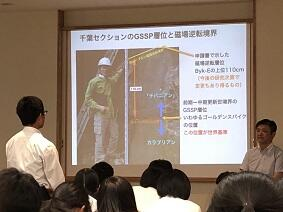
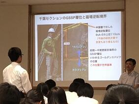 本日は、佐倉アクティブ講座に茨城大学理学部地球環境科学領域教授の岡田誠先生にお越しいただいて講義を受けることができました。
本日は、佐倉アクティブ講座に茨城大学理学部地球環境科学領域教授の岡田誠先生にお越しいただいて講義を受けることができました。皆さんよくご存知のように岡田誠教授は、地球の地質年代で更新世のうち、約77万年から12万6千年前の年代名称を「チバニアン」と名づけ、その基準地として千葉県市原市の地層を国際地質科学連合に申請したことで脚光を浴びた研究グループの中心的な役割を果たしている先生です。
先生からは、地層面にある生物の化石や宇宙塵、風成塵、花粉粒、大気起源の放射性核種などからは地球環境について何がどのようにわかるのか。
地層面は、ある瞬間の世界が二次元に凝縮された世界になっているので、地層からは時間を読み解くことができること。
δ18O の酸素の安定同位体の元素比から気候変動を解析する方法など、現代を紐解くため過去の状況を学ぶことの方法やおもしろさと大切さを教えていただきました。
先生には講演後の生徒からの熱心な質問にも丁寧にお答えしていただきました。岡田先生ありがとうございました。
野球部の皆さん感動をありがとう！！

 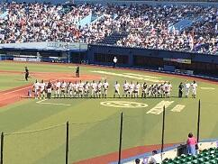
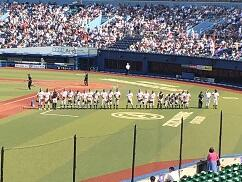


 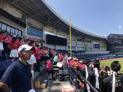
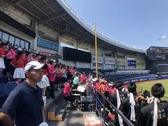
 今日９：１０よりZOZOマリンスタジアムで市立習志野高校との試合が行われました。選手の皆さんはこの猛暑のなか、集中力を切らさず本当にすばらしいプレーを続けてくれました。また、本校の応援委員会、吹奏楽部、先生、生徒、保護者の皆様による大応援団は気持ちが一体となり、最後まで勝利を信じて応援を続けることができました。何よりもこんなに気持ちよく応援ができる環境を作り出せるすばらしい人たちと一緒に応援できたことがとてもうれしかったです。
今日９：１０よりZOZOマリンスタジアムで市立習志野高校との試合が行われました。選手の皆さんはこの猛暑のなか、集中力を切らさず本当にすばらしいプレーを続けてくれました。また、本校の応援委員会、吹奏楽部、先生、生徒、保護者の皆様による大応援団は気持ちが一体となり、最後まで勝利を信じて応援を続けることができました。何よりもこんなに気持ちよく応援ができる環境を作り出せるすばらしい人たちと一緒に応援できたことがとてもうれしかったです。試合の結果は、習志野高校には一歩及ばなかったものの、この経験から多くのことを学ぶことができ、次のステップへ進むことができると思います。
この試合で野球部も応援団から力をもらったと思いますが、野球部が見せてくれた頑張りから応援団も多くの感動と喜びをいただきました。野球部の生徒の諸君、堀内先生、藤井先生本当にありがとうございました。また、応援してくださった皆様本当にありがとうございました。今後ともよろしくお願いいたします。
佐倉学特別講演会
佐倉市教育委員会の佐倉学特別講演会が本日１５：００から佐倉市中央公民館でおこなわれ、生徒とともに参加させていただきました。今回の講演の講師は、２０１５年ノーベル生理学・医学賞を受賞された北里大学特別栄誉教授の大村智先生でした。「私の歩んできた道」というテーマでご講演をいただきました。先生は、天然物有機化学の世界的権威でいらっしゃいます。今までに、５００種の新規化合物を発見し、２６種は、医薬、動物薬、農業用薬剤などとして世界中で使われているそうです。なかでも、抗寄生虫薬イベルメクチンは熱帯病のオンコルセカ症やリンパ系フィラリア症の予防・治療薬として、また、沖縄地方に多く罹患者のいる糞線虫症や今まで良い治療法の無かった疥癬の治療薬として使われており、年間３億人の方が救われているそうです。先生は幼いころより、おばあさまから「人のためになることをやりなさい」と教育を受けて育ってきたそうです。このことが先生の人生感の根底にあり、研究においても世の役に立つ天然有機化合物の発見を目指して独創的な研究を推進してこられました。研究者として早い段階から海外を意識して論文を書かれるなど、ご本人の弛まぬ努力が常に良き人との出会いにつながり先生を成長させてくれたそうです。そして、先生自身も人材育成を大切にしながら研究を進めてこられたそうです。その先生が、道元禅師の「正師を得ざれば学ばざるに如かず」という言葉や教師であった先生のお母様の日記帳に書かれた言葉「教師の資格は自分自身が絶えず進歩していること」や、先生ご自身が好きな言葉として「実践躬行」（じっせんきゅうこう 理論や信条をそのとおり自分自身で実際に行う）を大切にされていたことが教師としての私にはとても印象的でした。先生のお話は多くの示唆が含まれていながら大変わかりやすく、かつユーモアに富んだお話でアッという間に講演時間が過ぎてしまいました。今日参加した生徒たちも多くのことを得られたのではないでしょうか。先生ありがとうございます。また、このような貴重な機会を与えてくださった佐倉市教育委員会へあらためて感謝申し上げます。
野球応援No.1
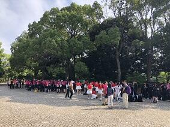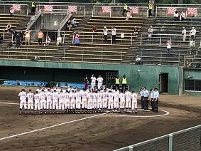

 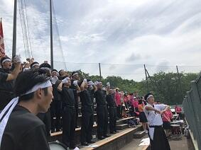
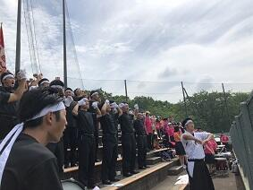

 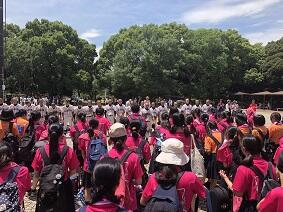本日７月１３日９：００から青葉の森公園野球場で、本校野球部の初戦が行われました。対戦相手は、県立四街道北高等学校でした。佐倉高校の先攻で始まりました。５回表に３点先取しましたが、その裏に１点返され、６回裏には２点取られ追いつかれました。７回表に１点取ってリードしたまま９回裏を迎えましが、ここで再度追いつかれてしまいました。延長に入ってすぐの１０回表に２点取って勝ち越しその裏は０点で抑えて勝利をつかむことができました。野球部の皆さんおめでとうございます。また、応援に駆け付けていただいた保護者の皆様、応援委員会、吹奏楽部の皆さんありがとうございした。
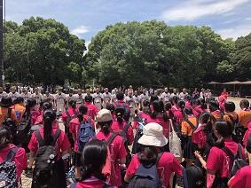本日７月１３日９：００から青葉の森公園野球場で、本校野球部の初戦が行われました。対戦相手は、県立四街道北高等学校でした。佐倉高校の先攻で始まりました。５回表に３点先取しましたが、その裏に１点返され、６回裏には２点取られ追いつかれました。７回表に１点取ってリードしたまま９回裏を迎えましが、ここで再度追いつかれてしまいました。延長に入ってすぐの１０回表に２点取って勝ち越しその裏は０点で抑えて勝利をつかむことができました。野球部の皆さんおめでとうございます。また、応援に駆け付けていただいた保護者の皆様、応援委員会、吹奏楽部の皆さんありがとうございした。
このまま予定通り日程が進行すれば、７月１５日に市立習志野高等学校との試合がZOZOマリンスタジアムの第１試合に予定されていますので、応援のほどよろしくお願います。
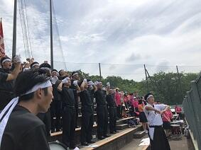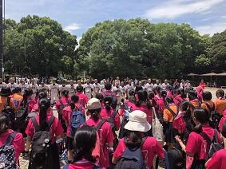本日７月１３日９：００から青葉の森公園野球場で、本校野球部の初戦が行われました。対戦相手は、県立四街道北高等学校でした。佐倉高校の先攻で始まりました。５回表に３点先取しましたが、その裏に１点返され、６回裏には２点取られ追いつかれました。７回表に１点取ってリードしたまま９回裏を迎えましが、ここで再度追いつかれてしまいました。延長に入ってすぐの１０回表に２点取って勝ち越しその裏は０点で抑えて勝利をつかむことができました。野球部の皆さんおめでとうございます。また、応援に駆け付けていただいた保護者の皆様、応援委員会、吹奏楽部の皆さんありがとうございした。このまま予定通り日程が進行すれば、７月１５日に市立習志野高等学校との試合がZOZOマリンスタジアムの第１試合に予定されていますので、応援のほどよろしくお願います。
SSH特別講義
 SGHにおいては、昨日、今日と日本政策金融公庫から２名の講師が来てくださり、２年生がビジネスプランの研究の進め方など班ごとにアドバイスをいただいていました。また、SSHにおいては、KEK（高エネルギー加速器研究機構）から本校の卒業生である宍戸寿郎先生にお越しいただきました。先生は、最新宇宙論に触れられ、宇宙の成り立ちに関して、宇宙誕生直後に同じ数だけあったはずの粒子と反粒子が、現在の宇宙ではどうして、粒子ばかり存在するのかという現代物理学の謎に挑むため「CP対称性の破れ」（粒子と反粒子の性質の違い）に関する実験（電子と陽電子を衝突させる）やこの実験を行うための加速器や測定装置についてお話しいただきました。講義の最後には、生徒たちに「どの分野に進んでも、その分野に貢献できるような人になってほしい」と激励の言葉をいただきました。宍戸先生ありがとうございました。
SGHにおいては、昨日、今日と日本政策金融公庫から２名の講師が来てくださり、２年生がビジネスプランの研究の進め方など班ごとにアドバイスをいただいていました。また、SSHにおいては、KEK（高エネルギー加速器研究機構）から本校の卒業生である宍戸寿郎先生にお越しいただきました。先生は、最新宇宙論に触れられ、宇宙の成り立ちに関して、宇宙誕生直後に同じ数だけあったはずの粒子と反粒子が、現在の宇宙ではどうして、粒子ばかり存在するのかという現代物理学の謎に挑むため「CP対称性の破れ」（粒子と反粒子の性質の違い）に関する実験（電子と陽電子を衝突させる）やこの実験を行うための加速器や測定装置についてお話しいただきました。講義の最後には、生徒たちに「どの分野に進んでも、その分野に貢献できるような人になってほしい」と激励の言葉をいただきました。宍戸先生ありがとうございました。 閑話 その７ 黄金比
ある人が階段を登ろうとしています。その人は、１歩で登れるのは、最高で２段までとします。つまり、階段を１歩では１段か２段で登れるとします。いま階段が、ｎ段としたら、登り方は何通り（Fｎ）あるか考えてみましょう。
１段しかない階段なら登り方は１通り (1) しかないので F1＝１
２段だと、１段目から１段で登る方法 (1)+1 か、最初から一気に２段で登る (2) かの２通りとなるので F2＝２
３段だと、２段目から１段で登る方法 ((1)+1)+1、(2)+1 と１段目から２段で登る方法 (1)+2 の３通りあるので、F3＝３
４段だと、３段目から１段で登る方法 (((1)+1)+1)+1、((2)+1)+1、((1)+2)+1 と２段目から２段で登る方法 ((1)+1)+2、(2)+2の５通りなので、F4＝５
５段だと、4段目から１段で登る方法 ((((1)+1)+1)+1)+1、(((2)+1)+1)+1、(((1)+2)+1)+1、(((1+1))+2)+1、((2)+2)+1と３段目から２段で登る方法 (((1)+1)+1)+2、((2)+1)+2、((1)+2)+2 の８通りあるので、F5＝８ となります。
こうして、可能な登り方の数列 { Fn } は、{１，２，３，５，８、・・・}
となります。
ｎ段の階段の登り方を考えてできた数列の第３項以降の各項 Fn は、その１段前までの登り方 Fn-1 とさらにその１段前までの登り方 Fn-2 との和として表すことができます。
つまり、数列 { Fn } は、F1＝１、F2＝２、 Fn＝ Fn-1 ＋ Fn-2 （ｎ≧３）で
帰納的に定義される数列となります。
 問１ ここで違う問題を考えてみましょう。ある男が、うさぎの番（つがい）を１対、壁で囲まれた場所に放しました。ウサギの番については、毎月新しい番を生み、生まれた番も次の月から番を生むとします。そしてウサギは死なないとすると１年間に何対のウサギが生まれるでしょうか。
問１ ここで違う問題を考えてみましょう。ある男が、うさぎの番（つがい）を１対、壁で囲まれた場所に放しました。ウサギの番については、毎月新しい番を生み、生まれた番も次の月から番を生むとします。そしてウサギは死なないとすると１年間に何対のウサギが生まれるでしょうか。
問２ ここで数列 { Fn }を次のようにつくります。まず、F1、F2 を好きな数に決めます。その２つの数で和を作り3番目の数 F3 とします。更に、2番目と3番目の数の和を作り４番目の数 F4 とします。この操作を繰り返して20番目くらいまでできたら数列の比 を計算してみてください。$$\lim_{n\to \infty}\frac{F_n}{F_{n-1 } }$$ はどんな値に近づくでしょう。
を計算してみてください。$$\lim_{n\to \infty}\frac{F_n}{F_{n-1 } }$$ はどんな値に近づくでしょう。
１段しかない階段なら登り方は１通り (1) しかないので F1＝１
２段だと、１段目から１段で登る方法 (1)+1 か、最初から一気に２段で登る (2) かの２通りとなるので F2＝２
３段だと、２段目から１段で登る方法 ((1)+1)+1、(2)+1 と１段目から２段で登る方法 (1)+2 の３通りあるので、F3＝３
４段だと、３段目から１段で登る方法 (((1)+1)+1)+1、((2)+1)+1、((1)+2)+1 と２段目から２段で登る方法 ((1)+1)+2、(2)+2の５通りなので、F4＝５
５段だと、4段目から１段で登る方法 ((((1)+1)+1)+1)+1、(((2)+1)+1)+1、(((1)+2)+1)+1、(((1+1))+2)+1、((2)+2)+1と３段目から２段で登る方法 (((1)+1)+1)+2、((2)+1)+2、((1)+2)+2 の８通りあるので、F5＝８ となります。
こうして、可能な登り方の数列 { Fn } は、{１，２，３，５，８、・・・}
となります。
ｎ段の階段の登り方を考えてできた数列の第３項以降の各項 Fn は、その１段前までの登り方 Fn-1 とさらにその１段前までの登り方 Fn-2 との和として表すことができます。
つまり、数列 { Fn } は、F1＝１、F2＝２、 Fn＝ Fn-1 ＋ Fn-2 （ｎ≧３）で
帰納的に定義される数列となります。
問１ ここで違う問題を考えてみましょう。ある男が、うさぎの番（つがい）を１対、壁で囲まれた場所に放しました。ウサギの番については、毎月新しい番を生み、生まれた番も次の月から番を生むとします。そしてウサギは死なないとすると１年間に何対のウサギが生まれるでしょうか。問２ ここで数列 { Fn }を次のようにつくります。まず、F1、F2 を好きな数に決めます。その２つの数で和を作り3番目の数 F3 とします。更に、2番目と3番目の数の和を作り４番目の数 F4 とします。この操作を繰り返して20番目くらいまでできたら数列の比
短時間豪雨
 昨日7月9日の14:30からSSHの運営指導委員会が地域交流施設において行われました。その会議が終わるころから雨が降り出し、30分間くらいでしたが雷とともにものすごい雨が降りました。マレーシア、タイ、シンガポールなど東南アジアの国々のスコールのように、道路だったところが、あっという間に川に代わるような、まさにバケツで撒いたような強さと量の雨でした。
昨日7月9日の14:30からSSHの運営指導委員会が地域交流施設において行われました。その会議が終わるころから雨が降り出し、30分間くらいでしたが雷とともにものすごい雨が降りました。マレーシア、タイ、シンガポールなど東南アジアの国々のスコールのように、道路だったところが、あっという間に川に代わるような、まさにバケツで撒いたような強さと量の雨でした。この雨で恩恵を受けたとすれば東郷池の水が増えていつになく水がきれいになったことです。普段は泳いでいる姿をはっきり・くっきりとみることができない東郷池の鯉や鮒たちの姿を今日はしっかりととらえることができました。
野球応援練習


 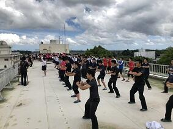
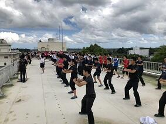
 本日、13:30から気持ちのこもった野球応援の練習が応援委員会と吹奏楽部、野球部員を中心に行われました。ここに参加してくれた生徒の諸君は、ここ一か月、文化祭の準備、自分の部活動、第２回定期考査の準備等あるなか、頑張る友人のために、応援練習を続けてきてくれました。そんな心温かい生徒諸君を見るにつけ、校長として誇りに思います。予定どおり試合が行われれば、７月１３日の青葉の森公園野球場の第１試合が本校野球部の初戦です。是非とも皆様、応援のほどよろしくお願いします。
本日、13:30から気持ちのこもった野球応援の練習が応援委員会と吹奏楽部、野球部員を中心に行われました。ここに参加してくれた生徒の諸君は、ここ一か月、文化祭の準備、自分の部活動、第２回定期考査の準備等あるなか、頑張る友人のために、応援練習を続けてきてくれました。そんな心温かい生徒諸君を見るにつけ、校長として誇りに思います。予定どおり試合が行われれば、７月１３日の青葉の森公園野球場の第１試合が本校野球部の初戦です。是非とも皆様、応援のほどよろしくお願いします。 SGH特別授業
1年生は

 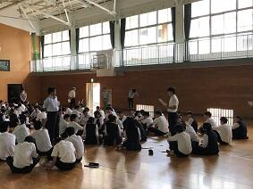SGHの課題研究のテーマを決めていくうえで、今後解決してみたいテーマをどのように一つに絞っていくのかが重要になります。本日は、ビジネスプラン作成を参考にして、体験的に学ぶ講座を、日本政策金融公庫 南関東創業支援センター所長でいらっしゃる寺田博史様を講師としてお招きして講義をお願いしました。考える対象を絞って、よいアイデアの出すための方法や、テーマを絞りこむための視点の置き方など
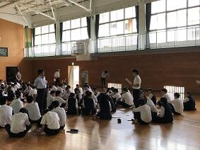SGHの課題研究のテーマを決めていくうえで、今後解決してみたいテーマをどのように一つに絞っていくのかが重要になります。本日は、ビジネスプラン作成を参考にして、体験的に学ぶ講座を、日本政策金融公庫 南関東創業支援センター所長でいらっしゃる寺田博史様を講師としてお招きして講義をお願いしました。考える対象を絞って、よいアイデアの出すための方法や、テーマを絞りこむための視点の置き方など
これからの探究活動を進めるうえでとても大切なことを学ぶことができたと思います。暑い中、講師をお引き受けいただいた寺田先生、本当にありがとうございました。
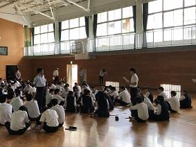SGHの課題研究のテーマを決めていくうえで、今後解決してみたいテーマをどのように一つに絞っていくのかが重要になります。本日は、ビジネスプラン作成を参考にして、体験的に学ぶ講座を、日本政策金融公庫 南関東創業支援センター所長でいらっしゃる寺田博史様を講師としてお招きして講義をお願いしました。考える対象を絞って、よいアイデアの出すための方法や、テーマを絞りこむための視点の置き方などこれからの探究活動を進めるうえでとても大切なことを学ぶことができたと思います。暑い中、講師をお引き受けいただいた寺田先生、本当にありがとうございました。
夢 新舞台


 今日7月8日（日）は、第73回国民体育大会関東ブロック大会が、茨城県神栖市にできた新カヌー会場で開催されました。この会場は、来年茨城県で開催される「いきいき茨城ゆめ国体2019」のカヌー会場となるところです。イメージキャラクターの「いばラッキー」が開会式に参加してくれました。
今日7月8日（日）は、第73回国民体育大会関東ブロック大会が、茨城県神栖市にできた新カヌー会場で開催されました。この会場は、来年茨城県で開催される「いきいき茨城ゆめ国体2019」のカヌー会場となるところです。イメージキャラクターの「いばラッキー」が開会式に参加してくれました。今日の大会は、各都県を勝ち抜いてきた代表者だけが参加する大会ですのでどの競技も質の高いすばらしいものでした。多少風は強かったもののまずまずのコンディションで競技が行われてよかったです。参加した選手の諸君は得るものが多かったのではないでしょうか。今後に向けてステップアップのいい機会になったと思います。
千葉県で震度５弱
本日は、本来なら七夕の話題なのでしょうが、皆さんご存知の通り、７日午後８時２３分ごろ、関東地方で強い地震が発生しました。気象庁によると、千葉県北東部で震度５弱が観測されたそうです。震源地は千葉県東方沖。震源の深さ66㎞で、マグニチュードは6.0と推定されています。この地震による津波の心配はないということでした。私はその時間千葉市にいて、携帯電話に一斉に地震を告げる緊急地震速報が鳴り響いた矢先に結構な揺れを感じました。皆さんの地域は大丈夫でしたか。被災されてないことを祈ります。
その後、JR千葉駅に着いても、電車が安全点検のため各駅に停まっていて、動き始めても結局、家に帰れたのが22時過ぎとなり通常より1時間30分ほど帰宅にかかる時間が多くなりました。西日本・中部地方で過去になかったほどの大雨による災害が起こっており、天災に対する備えの重要さをあらためて実感したところです。
その後、JR千葉駅に着いても、電車が安全点検のため各駅に停まっていて、動き始めても結局、家に帰れたのが22時過ぎとなり通常より1時間30分ほど帰宅にかかる時間が多くなりました。西日本・中部地方で過去になかったほどの大雨による災害が起こっており、天災に対する備えの重要さをあらためて実感したところです。
閑話 その６ 黄金比
さて、そろそろ Φ について慣れてきた？ところですが、ここでちょっと復習しておきましょう。
Φ は、2次方程式 $${\phi}^2-{\phi}-1=0$$ の正の解となりますので
$${\phi}=\frac{1+\sqrt{5 } }{2}$$ でした。そして、もう一つの負の解を Φ´ とすると、
$${\phi}^{\prime}=\frac{1-\sqrt{5 } }{2}$$ ですからこれを Φ で表すと、$${\phi}'=-\frac{1}{\phi}$$ ・・・（ア）となります。
問１ （ア）の関係を確かめてください。
問２ Φ と Φ’ の積と和を求めてください。
Φ に１を足すと２乗になったり、１を引くと逆数になったり
Φ っておもしろくないですか。
「閑話 その2」 の問２の問題ですが、
$${\phi}^2={\phi}+1$$ の両辺に Φ を掛けると $${\phi}^3={\phi}^2+{\phi}$$
この操作を続けていくと $${\phi}^{n}={\phi}^{n-1}+{\phi}^{n-2}$$ となります。
つまり、Φ の任意のべき乗は、その前のべき乗とさらに一つ前のべき乗を足せばいいことがわかります。
ここで、初項１、公比 Φ の数列 $$\lbrace{1,\phi,\phi^2,\phi^3,\phi^4, \phi^5,\cdots}\rbrace$$ を考えます。
いままで見てきたことから、Φ のべき乗を、Φ の１次の項だけで書き換えることができます。
実際に計算してみると $${\phi}^2={\phi}+1$$ ですから、
$${\phi}^3={\phi}^2+{\phi}={(}{\phi}+1{)}+{\phi}=2{\phi}+1$$
$${\phi}^4={\phi}^3+{\phi}^2={(}2{\phi}+1{)}+{(}{\phi}+1{)}=3{\phi}+2$$
$${\phi}^5={\phi}^4+{\phi}^3={(}3{\phi}+2{)}+{(}2{\phi}+1{)}=5{\phi}+3$$
$${\phi}^6={\phi}^5+{\phi}^4={(}5{\phi}+3{)}+{(}3{\phi}+2{)}=8{\phi}+5$$
したがって、もとの数列は、$$\lbrace{1,\phi,\phi+1,2\phi+1,3\phi+2, 5\phi+3,8\phi+5,\cdots}\rbrace$$ となります。
ここで Φ の係数に着目すると、｛１，１，２，３，５，８、・・・・｝
となります。この数列どこかで見たことありませんか。理系の人にはおなじみですよね。これについては次回また。
Φ は、2次方程式 $${\phi}^2-{\phi}-1=0$$ の正の解となりますので
$${\phi}=\frac{1+\sqrt{5 } }{2}$$ でした。そして、もう一つの負の解を Φ´ とすると、
$${\phi}^{\prime}=\frac{1-\sqrt{5 } }{2}$$ ですからこれを Φ で表すと、$${\phi}'=-\frac{1}{\phi}$$ ・・・（ア）となります。
問１ （ア）の関係を確かめてください。
問２ Φ と Φ’ の積と和を求めてください。
Φ に１を足すと２乗になったり、１を引くと逆数になったり
Φ っておもしろくないですか。
「閑話 その2」 の問２の問題ですが、
$${\phi}^2={\phi}+1$$ の両辺に Φ を掛けると $${\phi}^3={\phi}^2+{\phi}$$
この操作を続けていくと $${\phi}^{n}={\phi}^{n-1}+{\phi}^{n-2}$$ となります。
つまり、Φ の任意のべき乗は、その前のべき乗とさらに一つ前のべき乗を足せばいいことがわかります。
ここで、初項１、公比 Φ の数列 $$\lbrace{1,\phi,\phi^2,\phi^3,\phi^4, \phi^5,\cdots}\rbrace$$ を考えます。
いままで見てきたことから、Φ のべき乗を、Φ の１次の項だけで書き換えることができます。
実際に計算してみると $${\phi}^2={\phi}+1$$ ですから、
$${\phi}^3={\phi}^2+{\phi}={(}{\phi}+1{)}+{\phi}=2{\phi}+1$$
$${\phi}^4={\phi}^3+{\phi}^2={(}2{\phi}+1{)}+{(}{\phi}+1{)}=3{\phi}+2$$
$${\phi}^5={\phi}^4+{\phi}^3={(}3{\phi}+2{)}+{(}2{\phi}+1{)}=5{\phi}+3$$
$${\phi}^6={\phi}^5+{\phi}^4={(}5{\phi}+3{)}+{(}3{\phi}+2{)}=8{\phi}+5$$
したがって、もとの数列は、$$\lbrace{1,\phi,\phi+1,2\phi+1,3\phi+2, 5\phi+3,8\phi+5,\cdots}\rbrace$$ となります。
ここで Φ の係数に着目すると、｛１，１，２，３，５，８、・・・・｝
となります。この数列どこかで見たことありませんか。理系の人にはおなじみですよね。これについては次回また。
生徒会役員選挙
 今日は、生徒会役員選挙が行われます。今回の選挙は第71代の生徒会執行部役員を選ぶ大切な選挙となります。今回は、生徒会長については競争選挙となっています。また、他の役職（副会長、書記、会計）については信任投票となります。会長選挙についてそれぞれの候補が、昼休みを使って選挙活動を行ってきました。今日は投票前に立候補者全員の立会演説会が行われました。特に両会長候補とも、しっかりと有権者の生徒全員に考えと思いを伝えられたと思います。また、生徒の皆さんは、競争選挙、信任投票のいずれにしても代表を選ぶわけですから立候補者の考えや思いをしっかりと聞いて投票をして欲しいと思います。
今日は、生徒会役員選挙が行われます。今回の選挙は第71代の生徒会執行部役員を選ぶ大切な選挙となります。今回は、生徒会長については競争選挙となっています。また、他の役職（副会長、書記、会計）については信任投票となります。会長選挙についてそれぞれの候補が、昼休みを使って選挙活動を行ってきました。今日は投票前に立候補者全員の立会演説会が行われました。特に両会長候補とも、しっかりと有権者の生徒全員に考えと思いを伝えられたと思います。また、生徒の皆さんは、競争選挙、信任投票のいずれにしても代表を選ぶわけですから立候補者の考えや思いをしっかりと聞いて投票をして欲しいと思います。 閑話 黄金比 その５


 正五角形によるフラクタル
正五角形によるフラクタルその４でお話しした正五角形を使った美しい図形についてのお話です。正五角形を６枚使って「黄金三角形」（底辺に対する横の辺の比が Φ の二等辺三角形）の切込みが入ったひとまわり大きな正五角形（左の図形）を作ります。この正五角形をまた６組集めてさらに大きな正五角形を作りこれをさらに６組集めて都合正五角形216個で作った図形が真ん中の図形です。右の図形は、真ん中の図形をさらに６組集めて作った図形です。この操作はどこまでも続けられます。単純な構成方法を繰り返すしているだけなのに、こんなに美しい図形ができるのは驚きです。
閑話 黄金比 その４
 今回は、「正五角形をコンパスと定規で作図してみよう。」ということでヒントととなる？お話をします。
今回は、「正五角形をコンパスと定規で作図してみよう。」ということでヒントととなる？お話をします。左図は、1辺の長さが１の正五角形ABCDEです。△DABは正五角形ABCDEの対角線を２辺とする二等辺三角形です。頂角が 36° 、両底角は、72° となります。（なぜこうなるかは各自で確かめてください）
今、∠DAB の角の二等分線と辺DB との交点を G とします。
問１ 点G は正五角形ABCDEの対角線DBをどのような比に分ける点でしょうか。
問２ 正五角形ABCDEの対角線の長さはいくつになるでしょう。
問３ 与えられた一片の長さをもとに正五角形をコンパスと定規を使って作図するには何が作れればよいでしょうか。それをどのように利用すればよいでしょうか。
問４ 与えられた一片の長さをもとに正五角形をコンパスと定規を使って作図してみてください。
関東甲信地方梅雨明け（びっくり）

 本日6月29日、気象庁は関東甲信地方が梅雨明けしたとみられると発表しました。(平成30年の梅雨入りと梅雨明け（速報値）)統計を取り始めて以来、関東甲信地方が6月に梅雨明けするのは初めてのことだそうです。これまで関東甲信地方で最も早く梅雨が明けたのは2001年の7月1日だったそうです。
本日6月29日、気象庁は関東甲信地方が梅雨明けしたとみられると発表しました。(平成30年の梅雨入りと梅雨明け（速報値）)統計を取り始めて以来、関東甲信地方が6月に梅雨明けするのは初めてのことだそうです。これまで関東甲信地方で最も早く梅雨が明けたのは2001年の7月1日だったそうです。梅雨明けの時期ですが、平年と比べると(7月21日ごろ)より22日早く、昨年と比べても(7月6日ごろ)より7日早い梅雨明けだそうです。
梅雨の期間ですが、今年は梅雨入りしたのが6月6日ですから梅雨明け前日の6月28日までの日数は23日間となります。これは、梅雨の期間が6月11日から7月4日までだった1978年に並んで1番の短さだそうです。（梅雨入り・明けの時期は、秋に再検討され、見直されることもあるそうです）
いずれにしても、このところ一気に真夏に入ってしまったような暑さになっていたので、へんだなぁと思っていましたが、まさか、もう梅雨が明けてしまうなんて本当にびっくりです。熱中症対策（校長室もこのところ連日30℃です）や恵みの雨が少なかったことによる水不足対策にしっかり取り組まないといけないですね。
いずれにしても、このところ一気に真夏に入ってしまったような暑さになっていたので、へんだなぁと思っていましたが、まさか、もう梅雨が明けてしまうなんて本当にびっくりです。熱中症対策（校長室もこのところ連日30℃です）や恵みの雨が少なかったことによる水不足対策にしっかり取り組まないといけないですね。
閑話 黄金比 その３

 縦横の辺の長さの比が黄金比になっている長方形を黄金長方形と呼びます。左上図で言えば、AB：BC＝1 : Φ
縦横の辺の長さの比が黄金比になっている長方形を黄金長方形と呼びます。左上図で言えば、AB：BC＝1 : Φ ここで、この長方形から正方形を切り出すと残った長方形も黄金長方形になります。
左上図でいえば、長方形ABCDから、正方形ABFEを切り取った残りの長方形DEFCが黄金長方形です。
もとの長方形ABCDの辺の長さと小さな長方形DEFCの辺の長さを比べると $$\frac{1}{\phi}$$ 倍となります。ここで、また長方形DEFCから正方形DEGHを切り取った残りの長方形CHGFもまた黄金長方形となり、辺の長さは $$\frac{1}{\phi}$$ 倍となります。この操作を無限に続けていくとどんどん小さな黄金長方形ができ、そのたびに辺の長さは $$\frac{1}{\phi}$$ 倍となります。
左上図のように任意に選んだ元の長方形とそれから正方形を切り取って残った長方形のそれぞれの対角線を引くとどれも同じ一点で交わります。無限に小さくなる長方形は、この点に収束していくわけです。
左下図は、正方形部分に4分の１円を描いて作ったらせんです。きれいですね。
問１ 黄金長方形を作図してみよう。
問２ 黄金比 その２で示した連分数と今回の黄金長方形の分割を考察してみよう。
はやぶさ２がRyuguへ
地球から約３億キロ（地球と太陽の距離の2倍）離れた小惑星Ryugu（リュウグウ）を目指して2014年12月に打ち上げられた小惑星探査機「はやぶさ２」が、いよいよ本日、リュウグウに到着すると国立研究開発法人宇宙航空研究開発機構（JAXA）から発表されました。
また、「はやぶさ２」が24日にリュウグウから約４０キロに近づいたときに撮影した画像にはそろばん玉のような形をしたリュウグウとその表面の岩の塊やクレーターが鮮明に確認できるものが公開されています。（JAXAはやぶさ２プロジェクト）
JAXAでは、「はやぶさ2」のリュウグウの高度20㎞地点への到着に際して、本日16時00分～17時00分（予定）に記者会見を開催するそうです。これまで3年半の長旅を緻密な軌道決定と軌道計算に支えられ幾度かの軌道修正を経て飛んできた「はやぶさ２」の今回の小惑星サンプルリターンのミッションには、惑星の起源だけでなく地球の海の水の起源や生命の原材料をも探求するミッションが含まれているということで、多くの謎の解明に向けてこれから行われる数々のミッションの成功がとても楽しみです。
また、「はやぶさ２」が24日にリュウグウから約４０キロに近づいたときに撮影した画像にはそろばん玉のような形をしたリュウグウとその表面の岩の塊やクレーターが鮮明に確認できるものが公開されています。（JAXAはやぶさ２プロジェクト）
JAXAでは、「はやぶさ2」のリュウグウの高度20㎞地点への到着に際して、本日16時00分～17時00分（予定）に記者会見を開催するそうです。これまで3年半の長旅を緻密な軌道決定と軌道計算に支えられ幾度かの軌道修正を経て飛んできた「はやぶさ２」の今回の小惑星サンプルリターンのミッションには、惑星の起源だけでなく地球の海の水の起源や生命の原材料をも探求するミッションが含まれているということで、多くの謎の解明に向けてこれから行われる数々のミッションの成功がとても楽しみです。
閑話 黄金比 その２
$$x=1+\frac{1}{1+\frac{1}{1+\frac{1}{1+\frac{1}{1+\cdots}$$ と置くと
$$x=1+\frac{1}{x}$$ とかける。
問１ $$x$$ はどんな値でしょう。
問２ Φ を黄金比とします。 $${\phi}^{n}$$ を $${\phi}^{n-1}$$ と $${\phi}^{n-2}$$ で表わしてください。
 古代エジプト人は Φ を知っていた？pyramidとΦのロマン
古代エジプト人は Φ を知っていた？pyramidとΦのロマンピラミッドが左図のように、底面の１辺の長さが 2a の正方形の四角錐で、各側面の三角形の面積がピラミッドの高さ h を一辺とする正方形の面積に等しくなっていたとします。このとき、各側面の三角形の高さを s として、次の問を考えてください。
問３
第45回鍋山祭 書道パフォーマンス

 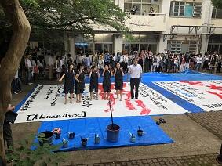本日11:00に行われた書道パフォーマンス。本校の中庭で多くのギャラリーの見守る中、書道部の書道ガールズが、気持ちを一つに、詩のことばに心をこめて一気に書き上げました。素晴らしいの一言です。
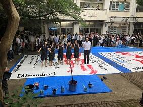本日11:00に行われた書道パフォーマンス。本校の中庭で多くのギャラリーの見守る中、書道部の書道ガールズが、気持ちを一つに、詩のことばに心をこめて一気に書き上げました。素晴らしいの一言です。昨日、今日と連日PTAの広報委員会の皆様がこのパフォーマンスも含め鍋山祭を取材していただいています。本当にありがとうございます。PTA広報が楽しみです。
第45回鍋山祭 第2日
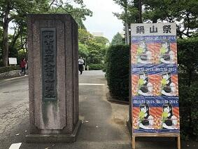
 本日は、鍋山祭の第2日目です。本日の発表は一般公開となっております。
本日は、鍋山祭の第2日目です。本日の発表は一般公開となっております。鍋山祭確認クイズ １．参加団体は、いくつでしょう。 ２．演劇鑑賞の整理券の配布場所・時間は。 ３．各調理等食品提供団体のメニューは。 ４．各部・同好会の特別企画の開始時間は。５．PTAバザーの場所は。
鍋山祭心に刻もうクイズ １．あなたのお気に入りの団体は。(投票がありますので、お願いします） ２．装飾が美しかった、工夫されてた団体は。３．鍋山祭一番の思い出は。
（右の写真は、私のお気に入りの工芸部の藍染ハンカチと美術部の缶バッチです。）
ご来場の際は、お気をつけてお越し下さい。お待ちしてます。
第45回鍋山祭 第１日

 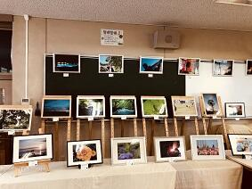
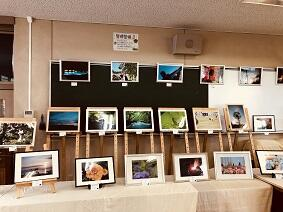 いよいよ、文化委員会を中心に全生徒、職員で準備してきた今年度の鍋山祭が始まりました。各クラスや委員会、部活動・同好会の発表はどこも熱が入っていてすばらしいものとなっています。部活動展示のほんの一端をご紹介いたします。
いよいよ、文化委員会を中心に全生徒、職員で準備してきた今年度の鍋山祭が始まりました。各クラスや委員会、部活動・同好会の発表はどこも熱が入っていてすばらしいものとなっています。部活動展示のほんの一端をご紹介いたします。工芸部の藍染作品（手拭いやコースターなど）や陶芸作品の展示・販売、彫金や鋳造作品の展示、写真部の作品展示とカレンダー等の販売、華道部の生け花展示。なお、生け花の水盤は、工芸部の生徒の作品となっています。美術部では、作品展示と缶バッチの展示・販売をしています。ご来場の際は、ぜひともご覧いただき感想をいただけると幸いです。また、生物部では、佐倉高校の豊かな樹木に着目し来校者がそれらを鑑賞できるよう発表がされていました。
明日は、通常の会場での展示発表に加えて部活動毎に特別企画が目白押しです。
なお、ご来場者には、文化委員会で丹精を込めて作成した見やすい鍋山祭のパンフレットがありますので御見学の際の参考としていただけると幸いです。
The summer solstice 2018


 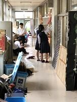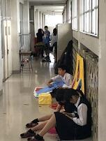
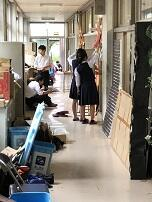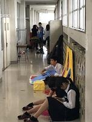
 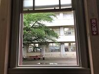
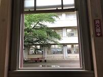今日は、二十四節気の第10番目の夏至です。佐倉市では、日の出の時間が4:24、日の入りが18:59です。佐倉市の緯度では昼の時間と夜の時間との比は、約1.6です。本日は、一年でもっとも日が長くなる日ですので佐倉高校にとって鍋山祭の準備日として最適な１日といえるのではないでしょうか。昨日の午後から校内は鍋山祭の会場へと装いを一変すべく槌音？が鳴り響いています。
生徒たちは、鍋山祭に向けて、熱い思いとともに多くの時間と労力をかけて準備してきましたが、いよいよその全貌を現す時が近づいてきました。６月23日（土）は、一般公開日ですのでお楽しみにしてください。
話は代わりますが、昨日は、第100回全国高等学校野球選手権記念東千葉・西千葉大会の試合の組み合わせ(千葉県高等学校野球連盟HPへ)が発表になりました。本校野球部は西千葉大会に出場します。本校の初戦は四街道北高校で、大会日程が順調に進めば、7月13日の青葉の森公園球場で行われる第１試合（試合開始は９時）となります。皆さんの熱い応援をよろしくお願いします。
閑話 黄金比 その１
先日、参加した千葉県高等学校教育研究会数学部会の春季研究大会の講演で、講師の先生が和算の問題を現在使える公式を使わずに解くとしたらというお話しのなかで「黄金比」を使って解くというものがあり、そういえば「黄金比」自体とっても興味深いものであることを思い出し、今回はその一端に触れてみたい。
黄金比は、エウクレイデス（ユークリッド）が「原論」で明快な定義を与えている。そこでは線分を単純に分けて得られる線分の長さの比で次のように定義し「外中比」（黄金比のこと）と呼んでいる。
問２ 問１で求めた正の解をΦ（ファイ）とする。Φの値はどのくらいだろう。
黄金比は、エウクレイデス（ユークリッド）が「原論」で明快な定義を与えている。そこでは線分を単純に分けて得られる線分の長さの比で次のように定義し「外中比」（黄金比のこと）と呼んでいる。
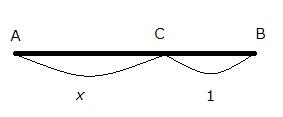「線分全体と長い切片との比が、長い切片と短い切片との比になる場合、線分は外中比に切り分けられたという。」左図でいえば、
 が成り立っているということ。つまり、短い切片CBの長さを基準にして、$$AB=x,CB=1$$ とおくと $$\frac{x+1}{x}=\frac{x}{1}$$ が成り立つ。よって、両辺に$$x$$を掛けて整理すると、$$x^2-x-1=0$$ ・・・① が得られる。
が成り立っているということ。つまり、短い切片CBの長さを基準にして、$$AB=x,CB=1$$ とおくと $$\frac{x+1}{x}=\frac{x}{1}$$ が成り立つ。よって、両辺に$$x$$を掛けて整理すると、$$x^2-x-1=0$$ ・・・① が得られる。
問１ $$x$$の2次方程式①を解いてみよう。
問２ 問１で求めた正の解をΦ（ファイ）とする。Φの値はどのくらいだろう。
関数電卓等で近似値を確かめてみよう。
問３ 問２でΦの近似値を関数電卓等でΦ２ や $$\frac{1}{\phi}$$ の近似値を確かめてみよう。
何か、気づいたことはありますか。
問４ ΦとΦ２ 、 $$\frac{1}{\phi}$$ との関係を考えてみよう。
問５ 下の数式の値はいくつでしょう。
$$\sqrt{1+\sqrt{1+\sqrt{1+\sqrt{1+\cdots } } } }$$
以上、興味をもった生徒は校長室まで話に来てください。
次回は 黄金比の連分数表現について
$$1+\frac{1}{1+\frac{1}{1+\frac{1}{1+\cdots}$$
問３ 問２でΦの近似値を関数電卓等でΦ２ や $$\frac{1}{\phi}$$ の近似値を確かめてみよう。
何か、気づいたことはありますか。
問４ ΦとΦ２ 、 $$\frac{1}{\phi}$$ との関係を考えてみよう。
問５ 下の数式の値はいくつでしょう。
$$\sqrt{1+\sqrt{1+\sqrt{1+\sqrt{1+\cdots } } } }$$
以上、興味をもった生徒は校長室まで話に来てください。
次回は 黄金比の連分数表現について
$$1+\frac{1}{1+\frac{1}{1+\frac{1}{1+\cdots}$$
歌声は世代を超えて
 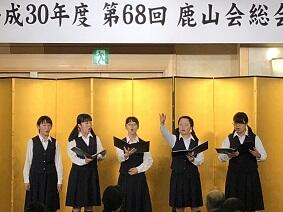
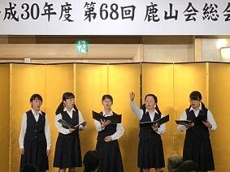


 今日は、佐倉高校同窓会である鹿山会の総会が開催されました。総会の会議終了後、本校の音楽部が「ア・カペラで行こう～佐倉高校音楽部＜鹿山会スペシャルステージ２０１８＞」と題して、その素晴らしいハーモニーを諸先輩方の前で披露してくれました。音楽部はア・カペラ・コーラスを中心にルネッサンス期の音楽から現代ポップスまで、幅広いジャンルの合唱に取り組んでおり、音楽を愛する心や伝統を受け継いで活動しています。今回のステージでは最後に参加者全員で合唱できるように校歌を選曲してくれました。世代を超えた校歌の響きは、いつもに増してすばらしいものでした。７０歳以上の差がある人たちが、心ひとつに歌える校歌の素晴らしさをあらためて感じました。素敵な時間を演出してくださった鈴木先生、秋保先生、音楽部の皆さん本当にありがとうございました。
今日は、佐倉高校同窓会である鹿山会の総会が開催されました。総会の会議終了後、本校の音楽部が「ア・カペラで行こう～佐倉高校音楽部＜鹿山会スペシャルステージ２０１８＞」と題して、その素晴らしいハーモニーを諸先輩方の前で披露してくれました。音楽部はア・カペラ・コーラスを中心にルネッサンス期の音楽から現代ポップスまで、幅広いジャンルの合唱に取り組んでおり、音楽を愛する心や伝統を受け継いで活動しています。今回のステージでは最後に参加者全員で合唱できるように校歌を選曲してくれました。世代を超えた校歌の響きは、いつもに増してすばらしいものでした。７０歳以上の差がある人たちが、心ひとつに歌える校歌の素晴らしさをあらためて感じました。素敵な時間を演出してくださった鈴木先生、秋保先生、音楽部の皆さん本当にありがとうございました。 夢に向かって
 ５月３０日から６月１９日まで、本校の卒業生９名が教育実習に取り組んでいます。実習生は教職に就く夢に向かって、一生懸命教材研究をし教壇に立っています。昨日から研究授業が始まりましたが、実習生の授業は、生徒が思考を深めることのできる、よく工夫された授業となっていました。夢に向かって一生懸命教育実習に取り組んでいる先輩の姿は、生徒にとっても大きな刺激になっているようです。
５月３０日から６月１９日まで、本校の卒業生９名が教育実習に取り組んでいます。実習生は教職に就く夢に向かって、一生懸命教材研究をし教壇に立っています。昨日から研究授業が始まりましたが、実習生の授業は、生徒が思考を深めることのできる、よく工夫された授業となっていました。夢に向かって一生懸命教育実習に取り組んでいる先輩の姿は、生徒にとっても大きな刺激になっているようです。実習生の皆さんが立派な教師になることを願っています。
本日は校長先生が出張のため、教頭が書き込みました。
学而不思則罔
 現在、本校では先生方がお互いに授業を見合う校内授業参観期間です。授業の良かった部分や改善点など他の先生と学び合う大変貴重な期間です。この期間を利用して岐阜大学の加藤教授、山口大学の鷹岡教授に本校の生徒の学びを深めるうえで、「学びをコントロールできる主体的な学習者となるべくICT活用の在り方」についてご教授いただける機会を得ることができ、訪問していただきました。生徒の手に馴染んだツールとしてICTが当たり前になってきている現在ではSGH、SSHの課題研究だけでなく、すべての学習活動において「主体的、対話的で深い学び」を進めるうえで、ICTの活用は大変有効で必須であります。新しい学習指導要領も視野に入れて研究を進めていきたいと思います。学習者が解答を求める過程での疑問を大切にして自分自身で腑に落ちるまでしっかりと考えきること。このような学びを繰り返すことできる学びの場を構築していきたいと強く思いました。
現在、本校では先生方がお互いに授業を見合う校内授業参観期間です。授業の良かった部分や改善点など他の先生と学び合う大変貴重な期間です。この期間を利用して岐阜大学の加藤教授、山口大学の鷹岡教授に本校の生徒の学びを深めるうえで、「学びをコントロールできる主体的な学習者となるべくICT活用の在り方」についてご教授いただける機会を得ることができ、訪問していただきました。生徒の手に馴染んだツールとしてICTが当たり前になってきている現在ではSGH、SSHの課題研究だけでなく、すべての学習活動において「主体的、対話的で深い学び」を進めるうえで、ICTの活用は大変有効で必須であります。新しい学習指導要領も視野に入れて研究を進めていきたいと思います。学習者が解答を求める過程での疑問を大切にして自分自身で腑に落ちるまでしっかりと考えきること。このような学びを繰り返すことできる学びの場を構築していきたいと強く思いました。 広報委員会
 今日は、朝からPTAの広報委員会の皆様がご多用な中、PTA会報第91号の第3回編集会議にいらしてお仕事をされています。今までも学校行事がある度に取材をしてくださり、生徒の活躍の様子を記録してくださっています。膨大な量の資料から、PTAの皆様へお渡しする会報を作成されるお仕事はとっても大変だと思います。
今日は、朝からPTAの広報委員会の皆様がご多用な中、PTA会報第91号の第3回編集会議にいらしてお仕事をされています。今までも学校行事がある度に取材をしてくださり、生徒の活躍の様子を記録してくださっています。膨大な量の資料から、PTAの皆様へお渡しする会報を作成されるお仕事はとっても大変だと思います。本当に、いつもありがとうございます。91号楽しみにしています。
関東大会0610－2


 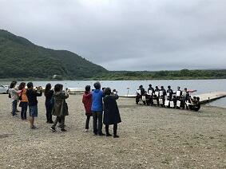
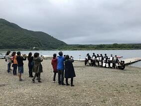 お陰様で天候が危ぶまれましたが、競技中は、風はあったものの雨に降られることなく全日程を無事に終了することができました。関東高体連カヌー専門部の先生方、関東カヌー協会の皆さん精進湖観光協会の皆様ありがとうございました。選手の皆さんはとっても頑張ったと思います。関東大会に出場してレベルの高い競技を経験し、次のステップへの課題を見つけ、新たな目標に向かって今後の練習に生かせる多くの学びができたのではないでしょうか。いづれにしても本当にお疲れ様でした。
お陰様で天候が危ぶまれましたが、競技中は、風はあったものの雨に降られることなく全日程を無事に終了することができました。関東高体連カヌー専門部の先生方、関東カヌー協会の皆さん精進湖観光協会の皆様ありがとうございました。選手の皆さんはとっても頑張ったと思います。関東大会に出場してレベルの高い競技を経験し、次のステップへの課題を見つけ、新たな目標に向かって今後の練習に生かせる多くの学びができたのではないでしょうか。いづれにしても本当にお疲れ様でした。また、昨日から応援に来ていただいた保護者の皆様ありがとうございました。これからもよろしくお願いします。